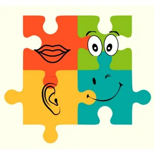

Zebrałyśmy adresy i kontakty do placówek na terenie Starachowic, które oferują bezpłatną pomoc osobom i rodzinom w trudnych sytuacjach.
Centrum Usług Społecznych
📍 ul. Majówka 21a, Starachowice
Główna placówka społeczna gminy. Zleceniodawca naszych działań.
🌐 Strona internetowa →Poradnia Leczenia Uzależnień – PZOZ
📍 ul. Batalionów Chłopskich 6 (I p., pok. 134 i 137)
Poradnictwo i terapia dla osób używających substancji psychoaktywnych oraz ich rodzin.
Stowarzyszenie Nauczycieli „Zdrowa Szkoła”
📍 ul. Prądzyńskiego 2
Punkt Konsultacyjny dla Uzależnionych i ich Rodzin. Terapia CANDIS (konopie). Pon–Pt 10:00–16:00.

Sensibus – Pomoc psychologiczna
📍 ul. Kilińskiego 24, Starachowice
Wsparcie psychologiczne i terapia. Kontakt również przez Facebook.
🌐 Strona internetowa →Stowarzyszenie Pomoc Rodzinie „Przystań”
📍 al. Armii Krajowej 28 (Galeria „Skałka”)
Przeciwdziałanie przemocy domowej, poradnictwo, terapia i pomoc prawna.

Powiatowe Centrum Pomocy Rodzinie
📍 ul. Złota 6
Przeciwdziałanie przemocy, program korekcyjno-edukacyjny. Pon–Pt 7:00–15:00.
🌐 Strona internetowa →Poradnia Psychologiczno-Pedagogiczna
📍 SP nr 11 (dawne Gimn. nr 3), wejście od ul. Leśnej, III piętro
Tymczasowa siedziba w związku z remontem budynku przy ul. Radomskiej 72. Diagnoza i terapia dla dzieci i młodzieży.
Punkt Pomocy Prawnej dla rodzin
📍 Referat Edukacji UM, ul. Radomska 45
Bezpłatna pomoc prawna dla rodzin dysfunkcyjnych.